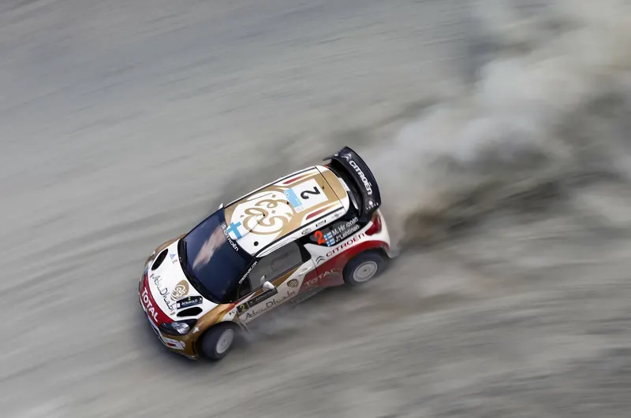
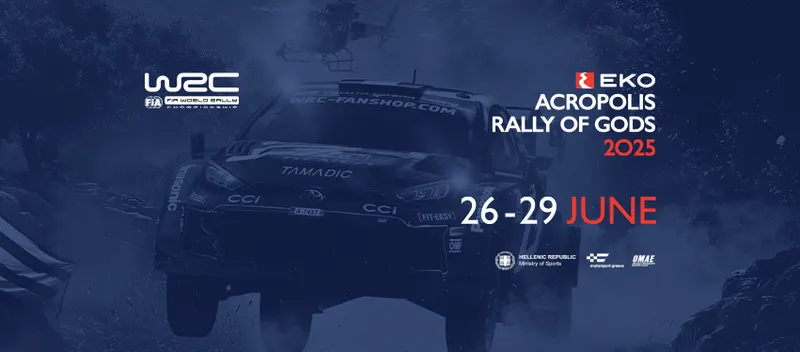
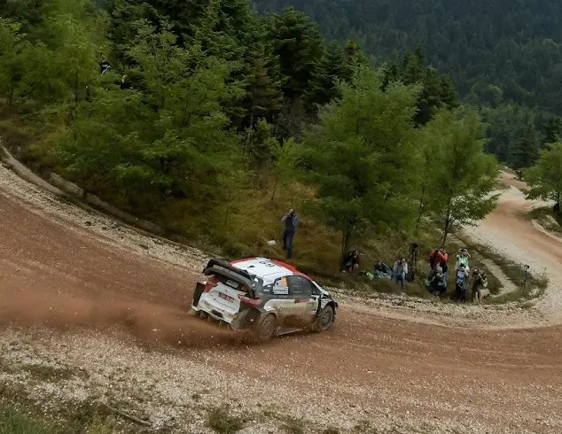
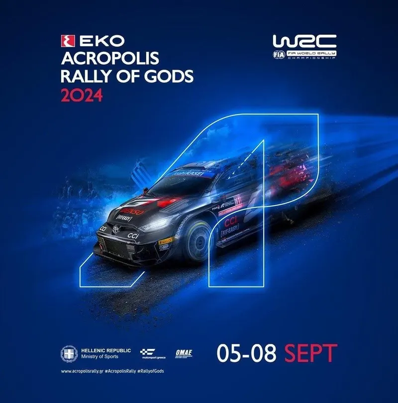
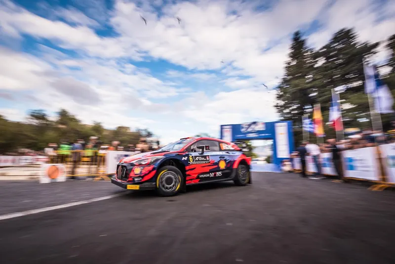
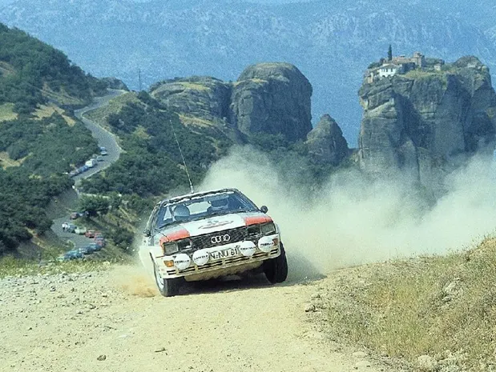

Acropolis Rally back in Loutraki; What can we expect for 2026?
The 70th EKO Acropolis Rally will be based in Loutraki. Moving the rally 's HQ to the Peloponnese was a move of necessity, as the Lamia Expo would not be available for 2026. So let's take a look at what might be on the 2026 itinerary, as well as…

Reacting to the 2025 Acropolis Rally Route
The itinerary for the 2025 Acropolis Rally has been revealed. The event returns to its usual summer slot for this year, and sees some changes to its route. Eleftherohori is absent from the event for the first time since 2015, Karoutes returns after…

Ranking all the Acropolis Rally stages since 2021 - Part 2
Rally Acropolis has used 21 individual stages since it's return in 2021. But how do these stages rank in Dimitris' eyes?

Reacting to the 2024 Acropolis Rally route
The itinerary for this year's Acropolis Rally has been revealed, and there are some surprises in it! The rally has abandoned it's usual format from the past 3 years, and the organisers have instead opted for a different one! Some notable omissions…

Ranking all the Acropolis Rally stages since 2021 - Part 1
Rally Acropolis has used 21 individual stages since it's return in 2021. But how do these stages rank in Dimitris' eyes?

Το Ράλλυ Ακρόπολις και τα Remote Service, ένα εργαλείο για το μέλλον
Πώς η επιστροφή των Remote Service κάνει την ζωή των διοργανωτών ευκολότερη, και τι σημαίνει για τον εθνικό μας αγώνα!

A tribute to the Acropolis stages that have been lost to time
With the 70th anniversary of the Acropolis approaching, we take a trip down memory lane and pay tribute to the Rally Acropolis stages that can no longer be used
Route History of the Acropolis Rally
See all ›
Route History of the Acropolis Rally Part 1: 1973-1980 - The Early Beginnings
The Acropolis Rally is an event that lives in infamy amongst motorsport and rallying fans. First held in 1953, the 2026 edition will mark the event’s 70th running. To honour that instance, I decided to go through all the editions of the Acropolis in…

Route History of the Acropolis Part 2: 1981-1986
We continue this series of posts with the 1981-1986 editions of the Acropolis Rally, the Group B era. In this era, the Acropolis started to be less of an endurance rally with 1000km of stages to one that was more accustomed to the norms imposed by…

Route History of the Acropolis Rally Part 3: 1987-1994
The dawn of the Group A era was a bummer for most of the hardcore rally fans, as the new cars were slower and a lot less exciting than the Group B monsters had been. As time went on, the cars, and the competition, would become more exciting, and…

Route History of the Acropolis Rally Part 4: 1996-2005
The Acropolis Rally returned to the WRC calendar in 1996, and its route would undergo significant changes in the following years. Iconic stages like Makrirahi and Tarzan would make way for others like Pavliani and Eleftherohori, as the rally became…

Route History of the Acropolis Rally Part 5: 2006-2013
Following the success of the 2005 Super Special, the Acropolis Rally was moved from Lamia to Athens. This meant that many of the rally’s best stages would not be an integral part of the event for years to come, with the rally using stages around…

Route History of the Acropolis Rally Part 5.5: 2014-2018
The Acropolis Rally would be absent from the WRC for the latter part of the 2010s, instead being run as a round of the European Rally Championship. In this time period, the event had no stability when it came to dates and headquarters, and kept…

Route History of the Acropolis Rally Part 6: 2021-2025
After a seven-year absence, the Acropolis Rally would return to the calendar for the 2021 WRC season. The event would substitute for Rally Chile, which was cancelled due to the COVID-19 pandemic. The announcement came on the 26th of March, with the…

Route History of the Acropolis Rally: Stats Special
The Acropolis Route History series may have ended, but we can still observe some interesting stats. Which were the most used stages? Which were the fastest and slowest stages in the event's history? How did the rally's competitive kilometers change…